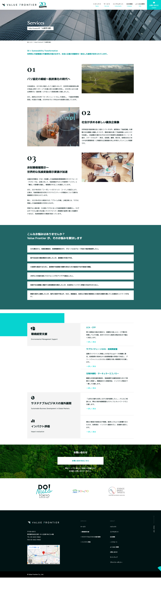

The Opportunity 機会
Value Frontier had established itself as a sustainability consulting firm, but its ambitions had outgrown its identity. The company was expanding into high-end fashion and diverse industries — markets that demanded a more sophisticated, contemporary brand presence. The existing visual identity no longer reflected the caliber of clients the firm was attracting or the breadth of its strategic capabilities. Value Frontier は、サステナビリティのコンサルティング会社としての地位をすでに築いていました。ただ、会社が向かおうとしている先に、見た目が追いついていませんでした。ハイエンドファッションをはじめ多様な業種へ広げていくには、もっと洗練された、いまの時代に合った佇まいが必要でした。当時のビジュアルは、実際に集まっているクライアントの水準も、この会社の戦略の幅も、映していなかったのです。
My Direction ディレクション
I led the rebranding from Brand DNA development through stylescapes to full design applications. The process began with uncovering the firm's core values and strategic aspirations, then translating those into a visual language that felt both premium and purposeful. The new identity system was designed to work seamlessly across corporate collateral, environmental signage, digital platforms, and print materials. ブランド DNA の構築から、スタイルスケープ、そして実際の制作物への展開まで、リブランディング全体を主導しました。まず、この会社が大事にしている価値と、これから向かいたい先を掘り起こし、それを「上質で、意図のある」見た目の言葉に置き換えていきました。新しいアイデンティティは、会社の各種制作物、空間のサイン、デジタル、印刷物のどこに置いても崩れないように設計しています。
The brand essence developed for Value Frontier also became the foundation for launching DO! NUTS TOKYO — a sub-brand focused on citizen engagement in sustainability. The sub-brand went on to win the 2021 American Graphic Design Award, validating the strategic and creative direction established during this rebranding. Value Frontier のためにつくったブランドの芯は、DO! NUTS TOKYO を立ち上げる土台にもなりました。このサブブランドは2021年のアメリカン・グラフィックデザイン賞を受賞し、このリブランディングで決めた戦略と表現の方向が正しかったことを裏づけてくれました。
Tools & Methods ツール＆手法
Results 成果
See the DO! NUTS TOKYO sub-brand launch → DO! NUTS TOKYO の立ち上げを見る →
The Brand, Realized 完成したブランド
From a sustainability consultancy to a premium, multi-industry brand — one coherent system, expressed across every touchpoint. サステナビリティのコンサルティング会社から、業種を越えて通用する上質なブランドへ。一貫したひとつの仕組みを、すべての接点で。

Brand Identity ブランドアイデンティティ
Logoロゴ


Colorカラー

Typographyタイポグラフィ

Collateral & Environmental Design 各種制作物と空間のデザイン


Brand DNA Development ブランド DNA の構築
_2020_Brand_DNA_Page_06.png)
_2020_Brand_DNA_Page_07.png)
_2020_Brand_DNA_Page_08.png)
_2020_Brand_DNA_Page_09.png)
_2020_Brand_DNA_Page_10.png)
_2020_Brand_DNA_Page_11.png)
_2020_Brand_DNA_Page_12.png)
_2020_Brand_DNA_Page_15.png)
_2020_Brand_DNA_Page_17.png)
_2020_Brand_DNA_Page_20.png)
_2020_Brand_DNA_Page_22.png)
_2020_Brand_DNA_Page_24.png)
Website ウェブサイト




Deliverables 成果物
- Brand Strategyブランド戦略
- Identity Systemアイデンティティシステム
- Collateral各種制作物
- Environmental Design環境デザイン
- Web Designウェブデザイン
Methods 手法
- Brand DNA Developmentブランド DNA の構築
- Stylescapes
- Visual Strategyビジュアル戦略
- Brand Guidelinesブランドガイドライン
Team チーム
Client executive team, visual designers, web design/developer. I served as Brand Strategist and Creative Director — leading brand DNA development, visual strategy, identity system, and design applications. クライアントの経営チーム、ビジュアルデザイナー、ウェブのデザイナーと開発者。私はブランドストラテジスト兼クリエイティブディレクターとして、ブランド DNA の構築、ビジュアル戦略、アイデンティティの体系、そして各種制作物への展開を主導しました。